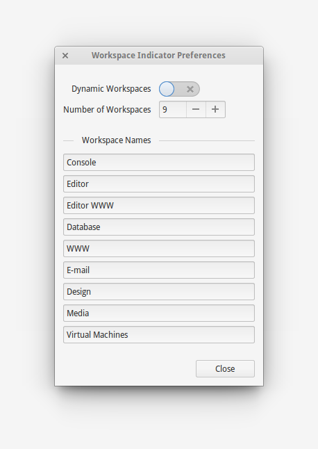

Indicator Workspaces is distributed as a Debain package file (.deb). The latest stable release can always be downloaded from this page.
To install either open the downloaded file, or navigate to the file in the terminal and run:
$ sudo debpkg -i indicator-workspaces_0.2_all.deb
Once installed, you will need to log out and back in for the indicator to appear.
You can also view the source code and install it manually via GitHub.
Downloading and installing the latest version will overwrite the currently installed version. You will need to log out and back in for the new indicator to run.
To remove Indicator Workspaces open the terminal and run:
$ sudo apt-get remove indicator-workspaces
When removing Indicator Workspaces, all preferences are kept as they are system preferences and not unique to Indicator Workspaces. You should set the preferences you would like to keep before removing.
The following commands when entered into the terminal will reset the preferences back to the elementary OS defaults:
$ gsettings set org.pantheon.desktop.gala.behavior dynamic-workspaces true
$ gsettings set org.gnome.desktop.wm.preferences num-workspaces 4
$ gsettings set org.gnome.desktop.wm.preferences workspace-names "[]"
Indicator Workspaces works with both dynamic workspaces as well as a fixed number of workspaces. A maximum of 36 workspaces is supported.
Workspaces from 1 - 9 can be named manually through the preferences. If a workspace doesn't have a name, it is given one in the form of 'Workspace (Number)'.
If you wish to name more than 9 workspaces, you can do this from the terminal. The following will name 12 workspaces by their number:
$ gsettings set org.gnome.desktop.wm.preferences workspace-names "['1','2','3','4','5','6','7','8','9','10','11','12']"
Changes to the workspaces are applied immediately.

* Added support for 36 workspaces
* Added infinite status icon for workspaces > 9
* Fixed naming of workspaces when no names are in dconf
* Fixed sizing of close button in preferences
Thu, 11 Sep 2014 09:14:10 +1000
* Initial release
Mon, 01 Sep 2014 10:44:40 +1000